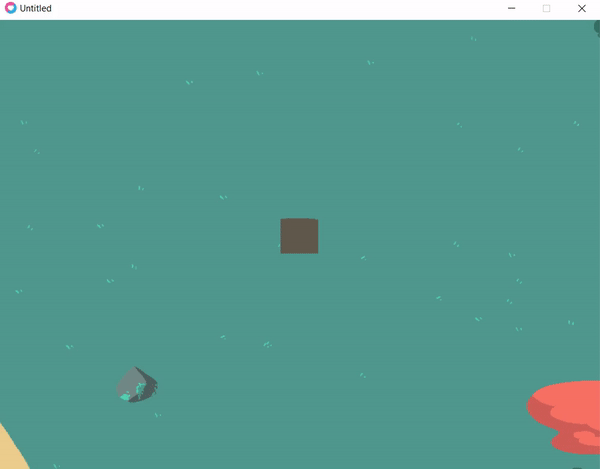

It was after a discussion with a few friends that we decided to take part in the Global Game Jam 2021. The theme of that edition, “Lost and Found,” motivated our small team—two developers and two artists—to create a game based on procedural generation. We played as a pilot who had barely survived a plane crash on an island. The objective was to find our co-pilot within a limited amount of time.

The island was procedurally generated, which was meant to hinder the player’s progress. However, the player had access to items that appeared in logical locations despite the randomness introduced by each run. Coming across one of these items granted knowledge that helped bypass certain random elements, eventually allowing the player to reach the co-pilot before the time limit expired.

The project’s scope was a real challenge in itself. In hindsight, it is obvious that we aimed too high, probably because we were heavily inspired by our recent play sessions of Outer Wilds. Another challenge was the technical stack we chose: Lua and the Love2D game framework. I was not familiar with these technologies, and a significant amount of time was required to get to grips with them. Despite this, I worked on several tasks (not always successfully), such as the random generation of the map and the random placement of entities on it. I had to overcome performance issues, as loading a large number of entities greatly slowed down the gameplay experience, and I also had to figure out how to implement coherent randomness—for example, ensuring that a tree would not appear in the water.
This was probably my most difficult game jam experience due to the various challenges mentioned above, and also the most frustrating, as the result after 45 hours was far from what we had envisioned at the start of the challenge. It taught me that this type of project requires substantial planning in order to end up with a playable prototype that we can be proud to show.
